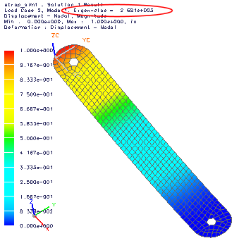

For NX Nastran results, buckling analysis results are listed as:
A set of static analysis results for the buckling loads subcase.
A set of modes for the buckling methods subcase.
Each mode has an eigenvalue (load factor) listed.
The applied load multiplied by the buckling load factor is the load at which the part will buckle.
The first mode has the lowest buckling load factor and is usually the mode of most interest.
